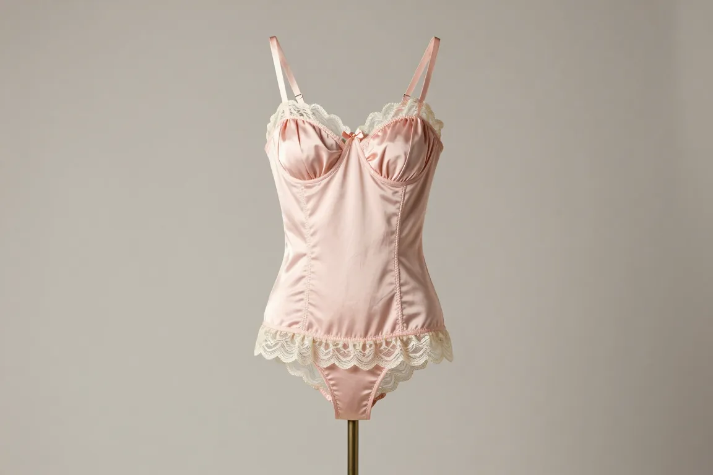

Первый современный бюстгальтер: лёгкая лента без косточек или две чашки из шёлка, хлопка и кружева, завязанные на спине. Он заменил корсет выше талии, а затем сплющил грудь под платье 1920-х.

Главная идея
Телу нужна лёгкая лента, а не клетка: мягкий бюстгальтер несёт грудь и оставляет талию свободной под новое свободное платье.
Принципы дизайна
Делайте бюстгальтер из двух небольших панелей, соединённых по центру спереди короткой полоской.
Откажитесь от косточек и стали; держите форму кроем и тесьмой.
Завязывайте или застёгивайте ленту на спине и сажайте её достаточно низко, чтобы спина оставалась открытой.
Режьте ленту глубиной 12–20 см, чтобы она закрывала грудь и не больше.
Делайте основу из тонкого хлопка, шёлка или крепдешина и обшивайте край кружевом.
Закрепляйте бретели узкой лентой, завязанной на плече.
С 1920 года кройте ленту плоской, чтобы прижать грудь вровень с грудной клеткой.